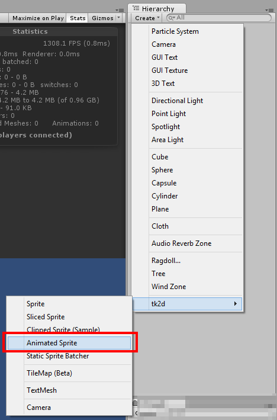
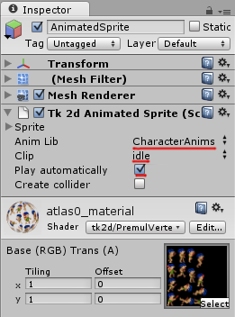

Documentation
Script Reference
Forum
Documentation
Script Reference
Forum
Create an animated sprite by clicking on "Create > tk2d > Animated Sprite" in the Hierarchy Window.

Select a default animation, and if necessary, tick the Play Automatically box to have the animation start playing as soon as the game starts. This is really convenient for looping background animations. In this example, select idle as the default animation.
